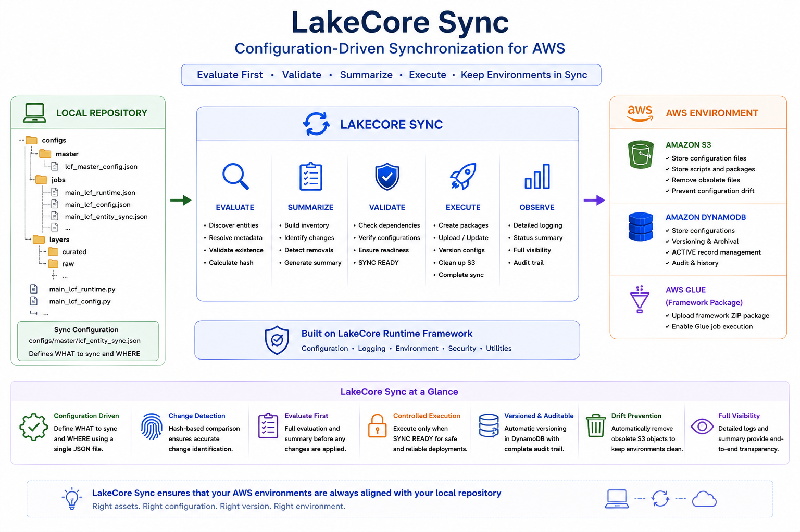
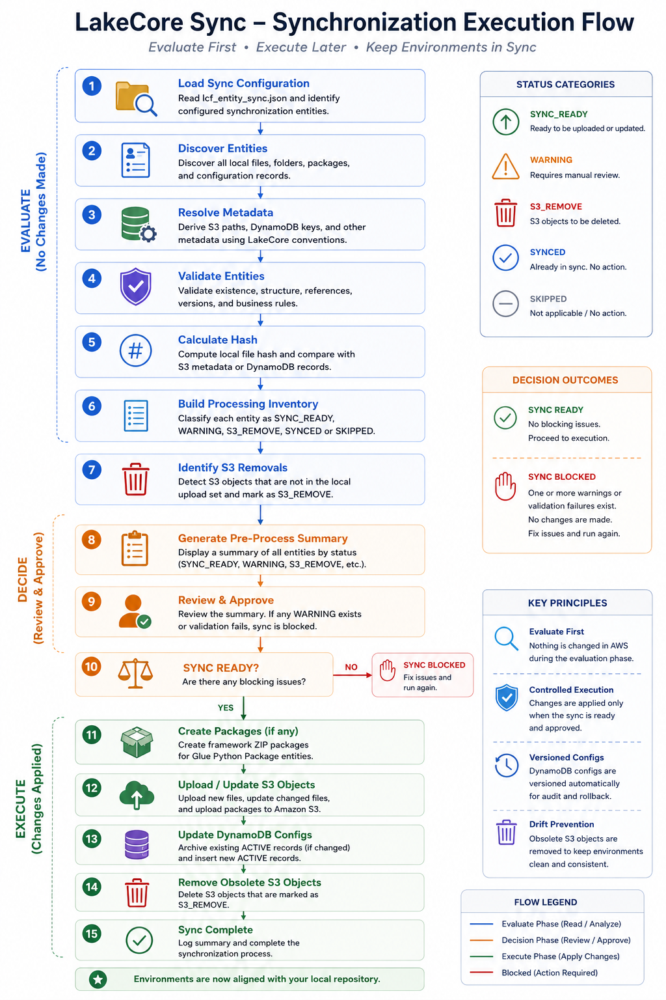
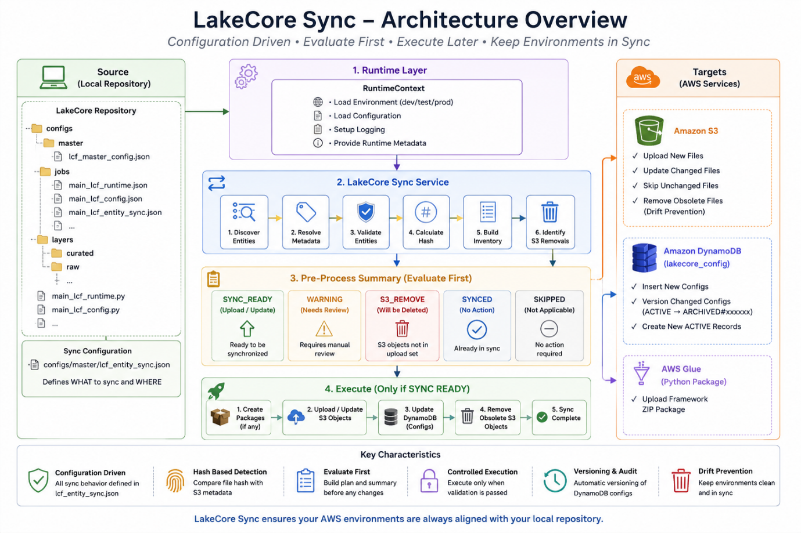

Configuration Driven Synchronization
Define synchronization behavior through a single configuration file without modifying application code.
Configuration Driven Synchronization for AWS Environments
LakeCore Sync is an intelligent synchronization framework designed to automate the deployment and management of LakeCore platform assets across AWS environments.
Built on top of LakeCore Runtime, LakeCore Sync evaluates local repository assets, validates deployment readiness, detects changes, and synchronizes approved updates to AWS services including Amazon S3 and Amazon DynamoDB.

Managing configuration files, scripts, packages, and metadata across multiple AWS environments can quickly become difficult and error prone.
LakeCore Sync eliminates manual synchronization activities by providing a centralized, configuration driven deployment framework that automatically detects changes, validates deployment readiness, and applies approved updates in a controlled and repeatable manner.
By treating the local repository as the source of truth, LakeCore Sync helps prevent configuration drift and ensures AWS environments remain synchronized at all times.
Define synchronization behavior through a single configuration file without modifying application code.
Automatically evaluates local assets and determines what has changed before any deployment activity occurs.
Validate synchronization activities without modifying AWS resources and review potential changes before execution.
Deploys new files, updates changed files, synchronizes folders, and manages framework packages within Amazon S3.
Synchronizes configuration records while maintaining complete version history for audit and rollback purposes.
Continuously ensures AWS environments accurately reflect the state of the local repository.

Uses hash based comparison to accurately identify new, modified, and unchanged assets.
Eliminates repetitive deployment activities and reduces the risk of manual configuration errors.
Maintains version history for synchronized configuration records, supporting auditability and controlled change management.
Generates detailed synchronization summaries before execution, allowing teams to review planned changes.
Identifies obsolete assets and removes them when required to maintain environment consistency.
Provides a standardized deployment process across development, staging, and production environments.

LakeCore Sync works alongside LakeCore Runtime and LakeCore Deploy to provide configuration driven deployment, automated synchronization, and operational consistency across modern AWS data platforms.
Buy NowLakeCore Sync works alongside LakeCore Runtime and LakeCore Deploy to provide configuration driven deployment, automated synchronization, and operational consistency across modern AWS data platforms.